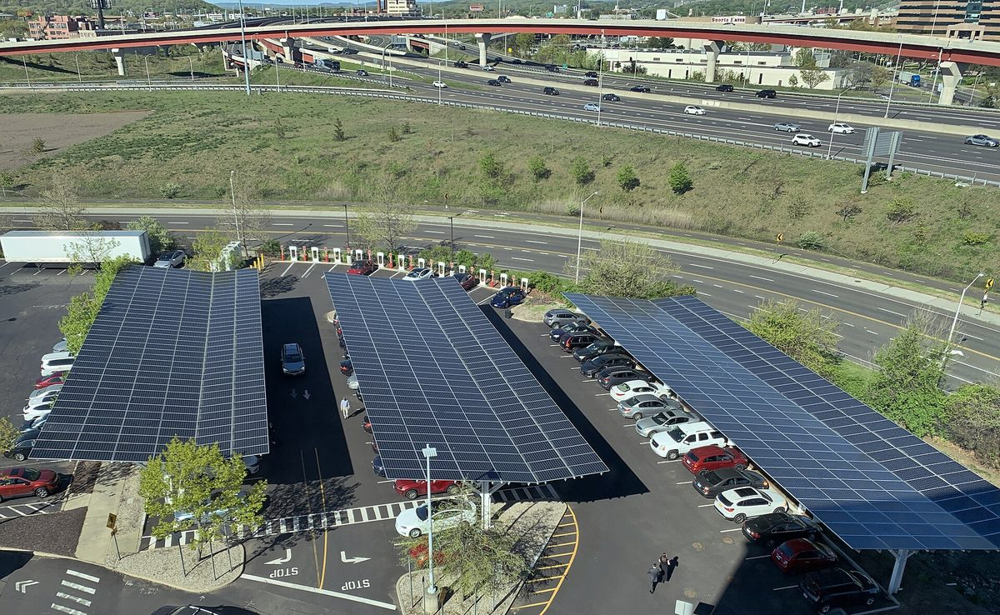

미국 로드아일랜드, 주 청사 주차장에 태양광 카포트·배터리·충전기…930만 달러 투입

프로비던스 스미스힐 청사 단지 재생에너지 1MW로…연방 지정 예산 450만 달러에 탄소배출권 수입 보태, 2027년 1분기 착공·연말까지 가동 목표
미국 로드아일랜드주가 주도 프로비던스 스미스힐의 주 청사 단지 주차장에 태양광 카포트와 배터리 저장장치, 전기차 충전소를 짓는다고 주 에너지자원청이 10월 26일 발표했다. 주 행정부와 보건부 건물 주차장에 태양광 카포트 2개가 들어서며, 공사가 끝나면 행정부·보건부·교통부 건물 지붕에 이미 깔린 태양광 패널 900장과 합쳐 청사 단지의 재생에너지 용량이 모두 1MW가 된다. 사업비 930만 달러는 잭 리드 연방 상원의원이 확보한 연방 지정 예산 450만 달러에 미 북동부 주들의 탄소배출권 거래제인 지역온실가스이니셔티브(RGGI) 수입으로 주 자금을 대응해 마련하며, 주는 사업비의 5%에 해당하는 연방 세액공제를 이미 확보했고 2028 과세연도에 총비용의 30~40%에 해당하는 세액공제를 추가로 받을 예정이다. 착공은 2027년 1분기이고 연방 세액공제를 받으려면 그해 말까지 가동해야 하며, 주 정부 분석으로는 기존 지붕 태양광과 합쳐 약 190가구가 1년 동안 쓸 전기를 만들고 사업 기간 동안 에너지 비용 330만 달러를 아끼면서 탄소 1만2,700톤을 줄일 것으로 예상된다. 이번 사업은 2015년 행정명령으로 시작해 주·지자체 건물과 공립학교에 먼저 태양광·저장장치·충전기를 깔아 민간 투자를 끌어내려는 '솔선수범(Lead by Example)' 사업의 하나로, 에너지자원청은 지금까지 185건에 4,800만 달러 넘게 투자했다. 댄 매키 주지사는 연방 자금과 세액공제를 활용해 주 시설에 새 기술을 들이는 것이 로드아일랜드 에너지의 미래를 위한 "현명한 투자"라고 밝혔고, 리드 의원은 경제적으로도 환경적으로도 책임 있는 사업이라고 평가했다.
시민에너지 관점
청사 주차장 한 곳을 발전소로 바꾸는 데 930만 달러가 들고 그 돈을 연방 예산과 세액공제, 탄소배출권 수입 같은 공공 재원으로 채운다는 것은, 공공부지 태양광을 정부가 직접 지을 때 재정이 얼마나 필요한지를 보여 준다. 주민 돈이 들어가면 공공 사업의 성격이 흐려진다는 우려가 나올 수 있지만, 부지는 공공이 내놓고 설비는 주민이 출자해 소유하면 재정 부담은 덜면서 아낀 돈과 전기 판매 수익이 납세자인 주민에게 직접 돌아간다. 미국 여러 주가 운영하는 커뮤니티 솔라(공동체 태양광) 제도처럼 지붕이 없는 세입자도 가까운 공동 발전소의 몫을 구독해 전기요금에서 차감받을 수 있게 하면, 공공 주차장은 청사의 발전소를 넘어 동네 주민 모두의 발전소가 될 수 있다. 국내에서도 청사·주민센터 주차장부터 주민 출자와 이익공유를 조건으로 내건 공공부지 태양광을 시작해야 한다.
출처: Rhode Island Current 2026-10-26 Nancy Lavin 원문 보기
米ロードアイランド州、州庁舎の駐車場に太陽光カーポート・蓄電池・充電器…930万ドルを投入
プロビデンス・スミスヒルの庁舎団地の再エネ容量を1MWに…連邦の指定予算450万ドルに排出権収入を上乗せ、2027年1～3月期に着工し年末までの稼働を目指す
米ロードアイランド州が、州都プロビデンスのスミスヒルにある州庁舎団地の駐車場に太陽光カーポートと蓄電池、電気自動車（EV）充電ステーションを整備すると、州エネルギー資源局が10月26日に発表した。州行政局と保健局の建物の駐車場に太陽光カーポート2基を設け、完成すれば行政局・保健局・運輸局の建物の屋根にすでに設置されている太陽光パネル900枚と合わせ、庁舎団地の再生可能エネルギー容量は計1MWになる。事業費930万ドルは、ジャック・リード連邦上院議員が確保した連邦の指定予算450万ドルに、米北東部の州による排出量取引制度「地域温室効果ガス・イニシアチブ（RGGI）」の収入で州の資金を上乗せして賄う。州は事業費の5%に当たる連邦税額控除をすでに確保しており、2028課税年度には総費用の30～40%に当たる税額控除を追加で受ける見込みだ。着工は2027年1～3月期で、連邦税額控除を受けるには同年末までに稼働させる必要がある。州政府の分析では、既存の屋根置き太陽光と合わせて約190世帯が1年間に使う電力を生み、事業期間を通じてエネルギー費用330万ドルを節約し、炭素1万2,700トンを削減すると見込まれている。今回の事業は、2015年の行政命令で始まり、州・自治体の建物や公立学校に先行して太陽光・蓄電池・充電器を導入して民間投資を呼び込むことを目指す「率先垂範（Lead by Example）」事業の一環で、エネルギー資源局はこれまで185件に4,800万ドル超を投じてきた。ダン・マッキー知事は、連邦資金と税額控除を活用して州の施設に新技術を導入することはロードアイランドのエネルギーの未来に向けた「賢明な投資」だと述べ、リード議員も経済的にも環境的にも責任ある事業だと評価した。
市民エネルギーの視点
庁舎の駐車場一つを発電所に変えるのに930万ドルがかかり、その資金を連邦予算や税額控除、排出権収入といった公的財源で賄うことは、公共用地の太陽光を政府が直接建てる場合にどれほどの財政が必要かを示している。住民の資金が入れば公共事業としての性格が薄れるとの懸念も出るだろうが、用地は公共が提供し、設備は住民が出資して所有すれば、財政負担を減らしつつ、節約分と売電収益が納税者である住民に直接戻る。米国の多くの州が運用するコミュニティーソーラー（共同太陽光）制度のように、屋根を持たない賃借人も近くの共同発電所の持ち分を購読して電気料金から差し引けるようにすれば、公共の駐車場は庁舎の発電所を超えて地域住民みんなの発電所になりうる。韓国でも庁舎や住民センターの駐車場から、住民出資と利益共有を条件とする公共用地太陽光を始めるべきだ。
出典: ロードアイランド・カレント 2026-10-26 ナンシー・ラビン 原文を読む
美国罗得岛州在州政府大楼停车场建设太阳能车棚、储能电池和充电桩…投入930万美元
普罗维登斯史密斯山州政府园区可再生能源容量将达1MW…联邦专项拨款450万美元加上碳排放配额收入，2027年第一季度动工、年底前投运
美国罗得岛州能源资源办公室10月26日宣布，将在首府普罗维登斯史密斯山的州政府园区停车场建设太阳能车棚、储能电池和电动车充电站。州行政部和卫生部大楼的停车场将建起2座太阳能车棚，完工后加上行政部、卫生部和交通部大楼屋顶上已有的900块太阳能板，园区可再生能源总容量将达到1MW。930万美元的项目经费，由联邦参议员杰克·里德争取到的450万美元联邦专项拨款，加上州政府以美国东北部各州碳排放交易机制"区域温室气体倡议"（RGGI）收入提供的配套资金组成；州政府已获得相当于项目经费5%的联邦税收抵免，并预计在2028纳税年度再获得相当于总成本30%至40%的税收抵免。项目预计2027年第一季度动工，要获得联邦税收抵免须在当年年底前投入运行。据州政府分析，连同现有屋顶光伏，项目每年可发出约190户家庭一年的用电量，在项目寿命期内节省能源开支330万美元，减少碳排放1.27万吨。该项目属于2015年依行政命令启动的"以身作则"（Lead by Example）计划，该计划先在州和地方政府所有的建筑及公立学校安装光伏、储能和充电设施，以带动民间投资，能源资源办公室迄今已在185个项目上投入逾4,800万美元。州长丹·麦基表示，利用联邦资金和税收抵免为州政府设施引入新技术，是对罗得岛能源未来的"明智投资"；里德参议员则称这是一个在经济上和环境上都负责任的项目。
市民能源视角
把一处政府停车场变成发电站要花930万美元，而且这笔钱要靠联邦预算、税收抵免和碳排放配额收入等公共财源来填补，这说明由政府直接建设公共用地光伏需要多少财政投入。有人可能担心居民资金进入会冲淡项目的公共性，但如果由公共部门提供场地、由居民出资持有设备，就能在减轻财政负担的同时，让节省下来的钱和售电收益直接回到作为纳税人的居民手中。若能像美国许多州实行的社区太阳能制度那样，让没有屋顶的租户也能认购附近共同电站的份额并抵扣电费，公共停车场就不只是政府大楼的电站，而能成为全体社区居民的电站。韩国也应从政府大楼和居民中心的停车场做起，启动以居民出资和收益共享为条件的公共用地光伏项目。
来源: 罗得岛时事报（Rhode Island Current） 2026-10-26 Nancy Lavin 查看原文
Rhode Island to put $9.3 million solar carports, battery and EV chargers on State House campus parking lots
Capitol Hill campus in Providence's Smith Hill to reach 1 MW of renewable capacity; $4.5 million federal earmark matched with carbon-allowance revenue, construction set for first quarter of 2027 with operation due by year-end
Rhode Island will build solar carports, a battery storage system and an electric vehicle charging station on the parking lots of its Capitol Hill state government campus in Smith Hill, Providence, the state Office of Energy Resources announced on Oct. 26. Two solar carports will go up over the lots of the Department of Administration and Department of Health, and together with the 900 solar panels already on the roofs of the administration, health and transportation buildings, they will bring the campus's renewable energy capacity to 1 MW in total. The $9.3 million cost is covered by a $4.5 million federal earmark secured by U.S. Sen. Jack Reed, matched with state money from the Regional Greenhouse Gas Initiative (RGGI), the carbon-allowance trading programme of northeastern U.S. states; the state has already secured a federal tax credit worth 5% of project costs and expects further credits worth 30% to 40% of total costs in tax year 2028. Construction is to begin in the first quarter of 2027, and the equipment must be running by the end of that year to qualify for the federal credits. A state analysis projects that, combined with the existing rooftop panels, the installations will generate enough electricity for about 190 homes a year and, over the project's lifetime, save $3.3 million in energy costs and cut carbon emissions by 12,700 tonnes. The project is part of the Lead by Example programme, set up by a 2015 executive order to install solar, storage and chargers first on state and municipal buildings and public schools in order to draw private investment, and the energy office has so far put more than $48 million into 185 projects. Gov. Dan McKee said using federal funding and tax credits to bring new technology to state facilities was a "smart investment" in Rhode Island's energy future, while Reed called it economically and environmentally responsible.
Citizen Energy View
Turning a single government parking lot into a power plant costs $9.3 million, paid from public sources such as federal budget money, tax credits and carbon-allowance revenue, which shows how much public spending it takes when government builds solar on public land by itself. Some may worry that bringing in residents' money would blur the public character of such projects, but if the public side provides the site and residents invest in and own the equipment, the fiscal burden falls while the savings and power-sale income flow straight back to residents who are also the taxpayers. If, as under the community solar programmes run by many U.S. states, renters without a roof of their own could subscribe to a share of a nearby shared plant and see it credited on their electricity bills, a public parking lot could become not just the government building's power plant but one for the whole neighbourhood. Korea, too, should start with the parking lots of government offices and community centres, launching public-land solar on the condition of resident investment and profit sharing.
Source: Rhode Island Current 2026-10-26 Nancy Lavin Read the original